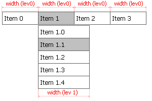

| CONTEXT HELP |
|---|
| Level Width |
|
 The width of the menu items in pixels. Menu item is generally rectangular bar with the text inside. This parameter sets the horizontal size of the bar which should be big enough to accommodate the longest text as well as all paddings and embedded HTML elements (if any). This setting is shared among all menu items on the same level/depth. In Tigra Menu PRO and Tigra Menu GOLD the width can be set for each item independently. By default the width is inherited from the parent level |